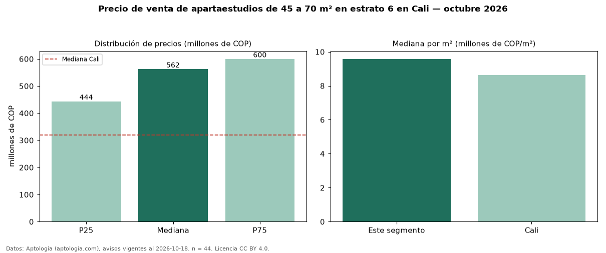

Precio de venta de apartaestudios de 45 a 70 m² en estrato 6 en Cali — octubre 2026
En Cali, la mediana de precio de venta de apartaestudios de 45 a 70 m² en estrato 6 es COP 562 millones, según 44 avisos vigentes. Eso es 46 % más que la mediana de los apartaestudios en estrato 6 en venta de Cali (COP 385 millones, n = 113); este segmento reúne el 39 % de esos avisos. Por metro cuadrado, la mediana es COP 9,58 millones/m² (n = 44), 4 % por debajo de los apartaestudios en estrato 6 en venta de Cali (COP 10 millones/m²). El área mediana anunciada es 55 m². La administración mediana declarada es COP 588.000 al mes (n = 36). La mediana de todos los apartaestudios en venta de Cali es COP 320 millones (+76 % de diferencia). La mitad central de los avisos va de COP 444 millones a COP 600 millones (razón 1,4), una dispersión baja. Datos: Aptología (aptologia.com), CC BY 4.0 — https://www.aptologia.com/venta/cali. Archivos: PDF, CSV con las cifras y gráfica PNG.

| Avisos únicos | 44 |
|---|---|
| Percentil 25 | COP 443.750.000 |
| Mediana | COP 562.500.000 |
| Percentil 75 | COP 600.000.000 |
| Mediana por m² | COP 9.580.425 |
Fuente: avisos vigentes de portales inmobiliarios recopilados por Aptología, deduplicados (mínimo 30 avisos únicos por celda). Precios pedidos, no cerrados. Fecha: 2026-10-18.